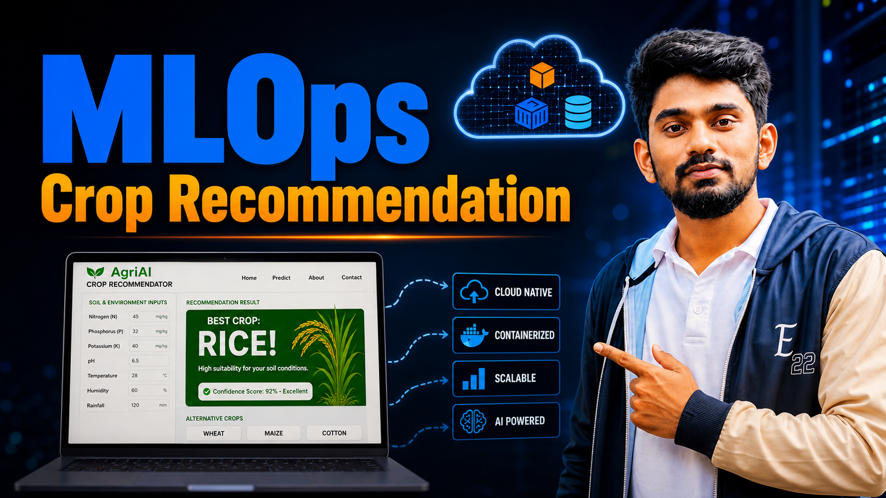
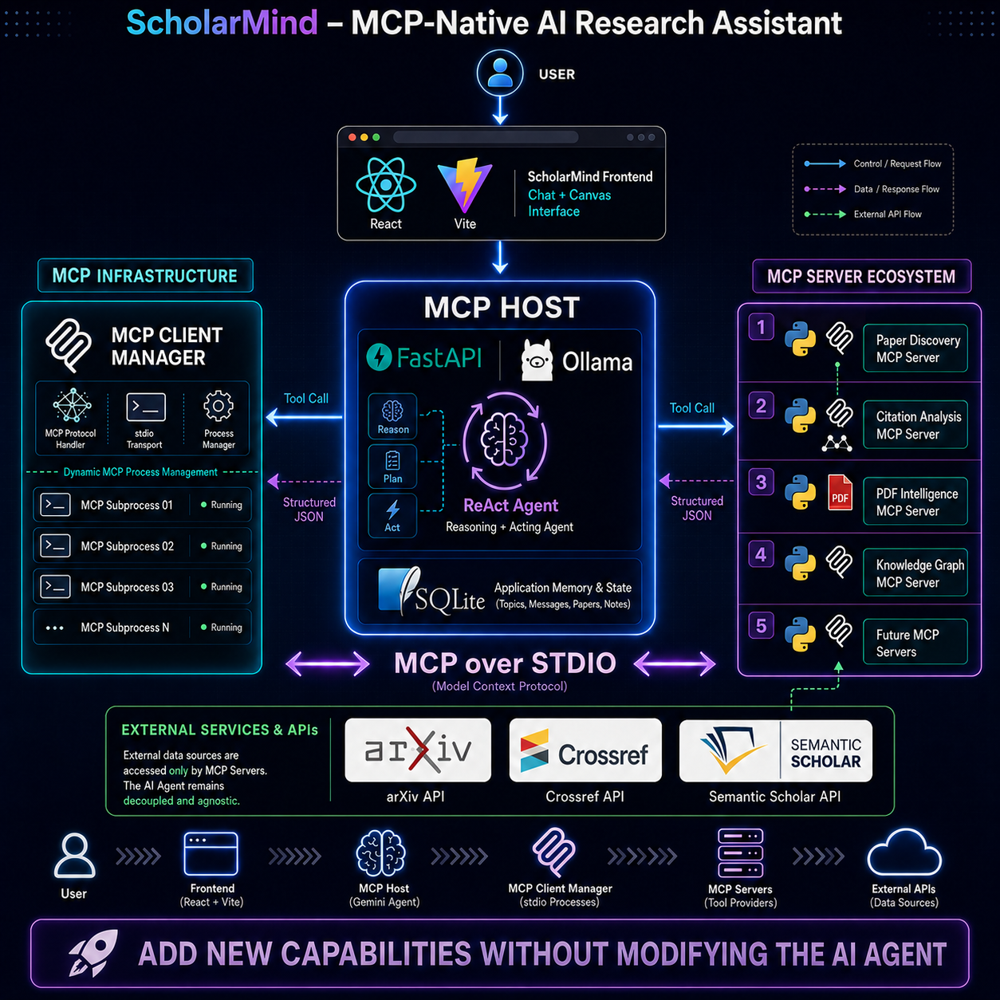
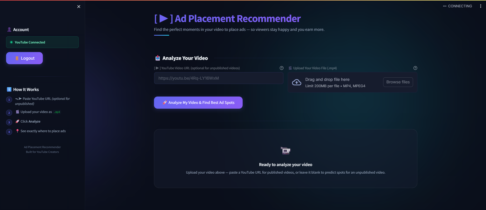
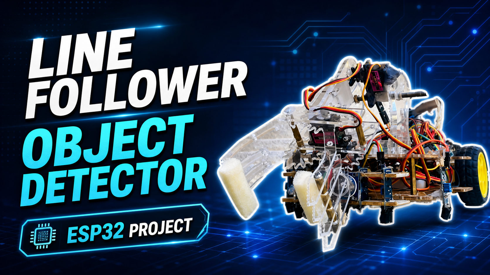

KOSALA
ML Engineer · Builder · Freelancer
Computer Engineering undergraduate specializing in Machine Learning, Deep Learning, and Computer Vision. Active researcher in CNN-based agricultural AI. Building YakaWork — a Sri Lanka-focused freelancer marketplace. Fiverr-verified designer & developer with 4+ years of international client experience.
Three Identities.
One Vision.
I don't fit into a single box. My work spans across engineering innovation, entrepreneurship, and knowledge sharing — each identity reinforcing the other.

The Engineer
Computer Engineering undergraduate at the University of Jaffna specializing in Machine Learning, Deep Learning, Computer Vision, and MLOps. Active researcher developing CNN-based agricultural AI systems for crop health monitoring — working with PyTorch, OpenCV, transfer learning, and end-to-end ML pipelines in production.
View Research Web →The Builder
Founder of YakaWork — a full-stack freelancer marketplace platform built for Sri Lanka, connecting local talent with clients across web, design, and tech. Simultaneously, a Fiverr-verified freelance designer and web developer with 4+ years of international client delivery across graphic design, branding, and web development.
The Creator
Tech educator and YouTube content creator dedicated to simplifying complex engineering concepts, ML tutorials, and providing actionable career insights for aspiring engineers. Leveraging media roles like IEEE PES Editor to democratize technical knowledge and empower the next generation of Sri Lankan engineers through digital storytelling.
I'm Kosala Nayanajith Deshapriya, a Computer Engineering undergraduate at the University of Jaffna, Sri Lanka. My work sits at the intersection of machine learning research, product engineering, and creative design.
My core technical focus is ML and deep learning — specifically computer vision systems and MLOps pipelines. My active research applies CNN architectures to precision agriculture, detecting tomato leaf density patterns for crop health monitoring using PyTorch, ResNet/EfficientNet transfer learning, and data augmentation.
On the product side, I'm building YakaWork — a Next.js-powered freelancer marketplace tailored for the Sri Lankan market. I've also maintained 4+ years of freelance delivery on Fiverr across graphic design and web development for international clients. I'm immediately available for remote roles in AI/ML, Data Science, MLOps, or Full-Stack Engineering.
Built. Shipped. Live.
End-to-end ML systems, full-stack platforms, and embedded solutions — real projects with real deployments, not just demos.
YakaWork — Sri Lankan Freelancer Marketplace
Building a full-stack freelancer marketplace platform tailored for the Sri Lankan market — connecting local talent with clients for web, design, and tech services. Architected with scalable Next.js SSR patterns, user authentication, profile management, service listings, real-time messaging, and payment integration via Sri Lankan gateways. Full API-first architecture with component-driven UI for performance and SEO.

Crop Recommender Platform — End-to-End MLOps
A production-grade Crop Recommender Platform connecting data science, containerization, CI/CD, and cloud infrastructure. Instead of leaving the ML model in a local notebook, I transformed it into a fully deployable application with an automated cloud delivery pipeline.

ScholarMind — Autonomous AI Research Agent
An autonomous AI Research Agent built entirely on local open-weights LLMs. It leverages the Model Context Protocol (MCP) to securely decouple the core reasoning agent from isolated research tools, allowing it to search academic databases, extract methodologies, and dynamically generate literature reviews. Features a local-first ReAct Agent powered by Ollama and a premium dual-pane React frontend.

Ad Placement Recommender — AI YouTube Optimizer
An AI-powered YouTube ad timestamp optimizer that uses real viewer retention data and audio/video analysis to recommend the best moments to place ads. Features two operating modes: fetching real retention curves via the YouTube Analytics API, or pre-publish prediction via Librosa audio energy analysis. Built with a LightGBM ML ranking engine and an extensive business rules engine.

Tomato Leaf CNN — Agricultural AI
CNN-based computer vision model detecting and classifying tomato leaf density patterns as growth-stage indicators for precision agriculture. Applies transfer learning from ResNet/EfficientNet on custom annotated datasets with augmentation strategies for variable field lighting, occlusion, and growth-stage variance. Exploring LSTM integration for temporal growth tracking. Includes MLOps: experiment tracking, model versioning, reproducible pipelines.
Laptop Price Predictor — End-to-End ML
Complete ML pipeline from data ingestion and EDA through feature engineering, Random Forest Regression model training, evaluation, and live deployment. Shipped as a publicly accessible Flask web application with a custom HTML/CSS interface. Demonstrates full production ML workflow including model serialisation and REST API serving.
NewsLK — Sri Lanka News Aggregation Platform
Deployed full-stack news aggregation platform at news-lk.vercel.app aggregating Sri Lankan TV news via multiple REST APIs. Implemented server-side rendering with Next.js for fast load times and SEO optimisation. Live production deployment on Vercel with continuous delivery.
Hostel Management System — University Admin Platform
Comprehensive university hostel administration system replacing manual paper-based workflows with digital automation. Multi-role access control for admin, warden, and student. Features: room allocation, visitor logs, complaint tracking, payment management, and report generation.
EncHAT — Encrypted Real-Time Chat Platform
Architected a secure real-time communication platform with end-to-end message encryption and planned WebRTC video call integration. Designed for privacy-first communication with modern cryptographic protocols and a clean, minimal UI.
Image Classifier — Transfer Learning Web App
Trained and deployed a transfer learning image classifier with Flask API backend and HTML/CSS/JS frontend. Demonstrates production ML serving patterns — model inference via REST endpoint, real-time prediction responses, and clean web interface for non-technical users.
Intelligent Line-Following Robot (ESP32)
Implemented forward and inverse kinematics solvers for robotic manipulators with singularity analysis. Modelled workspace boundaries and joint constraints to simulate arm movement in constrained environments. Line-following and object detection logic deployed on ESP32 microcontroller.

SetupForge — Intelligent Windows Provisioning
An intelligent PC setup and software provisioning platform built with Electron + React to simplify and automate Windows setup workflows. Features hardware detection, profile-based software orchestration (Developer/Gaming/Productivity), and system optimization recommendations. Built for high-performance desktop environments.

Active Research
Ongoing deep learning research at the University of Jaffna — applying CNN-based computer vision to precision agriculture, with real-world deployment targets in crop health monitoring.
Tomato Leaf Density-Based Growth Detection with Deep Learning
Conducting active research on CNN-based computer vision models to detect and classify tomato leaf density patterns as an indicator of plant growth stage and crop health. Designing a custom dataset pipeline with annotation and augmentation strategies suited for agricultural imaging conditions — handling variable lighting, occlusion, and growth-stage variance found in real field environments.
Exploring LSTM integration for temporal growth tracking across image sequences, and applying transfer learning from pre-trained vision models (ResNet, EfficientNet) to maximise accuracy on limited domain-specific training data.
- →Precision agriculture & automated crop monitoring
- →Early disease & growth anomaly detection in field conditions
- →Temporal plant growth stage classification via LSTM
- →Scalable deployment in resource-constrained field hardware
Reproducible ML Pipeline & Model Versioning
Applying MLOps best practices throughout the research workflow — experiment tracking, model versioning, and reproducible training pipelines to ensure systematic iteration and result integrity across model architectures and dataset versions.
Agricultural Dataset Pipeline & Annotation Strategy
Designing a full custom dataset collection and annotation pipeline tailored for agricultural computer vision. Addresses domain-specific challenges: inconsistent field lighting, plant occlusion, multi-growth-stage variance, and class imbalance across crop health states.
Building & Delivering
Founder of a live product in active development, and 4+ years of verified freelance delivery across international clients — not just ideas, but shipped work.

Founder of WeBz PVT(LTD), a startup dedicated to building intelligent software products. Currently shipping SetupForge — an automated Windows provisioning platform, and YakaWork — a full-stack freelancer marketplace platform purpose-built for the Sri Lankan market.
Built with performance and SEO in mind from the ground up, utilizing modern tech stacks like Next.js, Electron, and React to deliver premium user experiences and automated workflows.
View Startup →
Where Art Meets Technology
4+ years of design work across branding, digital media, motion graphics, and UI/UX design. Every pixel intentional.
Sharing Knowledge.
Building Community.
I am deeply passionate about tech education. Through my YouTube channel, I bridge the gap between academic theory and industry practice, sharing my engineering journey with a global audience.

Focusing on Machine Learning, Full-Stack development, and advanced engineering concepts. I believe in "Learning by Doing" and share every step of my research and product-building journey to empower fellow engineering students.
▶ Visit My YouTube Channel ↗
Technical Arsenal
A breadth of technical and creative skills — each sharpened through real projects, research, and professional freelance work.
ML / Cloud / DevOps
 Python
Python
 NumPy
NumPy
 Pandas
Pandas
 Scikit-learn
Scikit-learn
 FastAPI
FastAPI
 LLMs
LLMs
 Docker
Docker
 Kubernetes
Kubernetes
 Jenkins
Jenkins
 Terraform
Terraform
Web Development
 Node.js
Node.js
 Express.js
Express.js
 React
React
 MongoDB
MongoDB
Immediately Available
Open to remote full-time or contract roles in AI/ML Engineering, Data Science, MLOps, DevOps, or Full-Stack Development. Available to start right away.
Let's Work Together
Open to remote roles in AI/ML, Data Science, MLOps, and Full-Stack. Also available for freelance projects, research collaborations, and technical conversations.